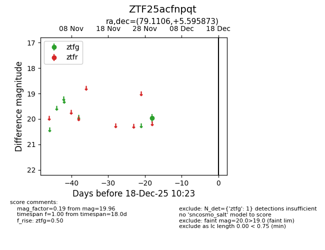
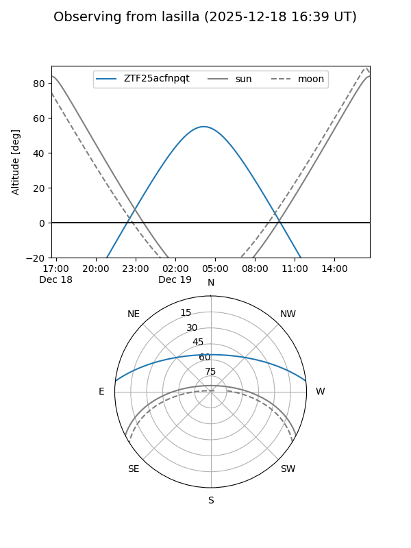
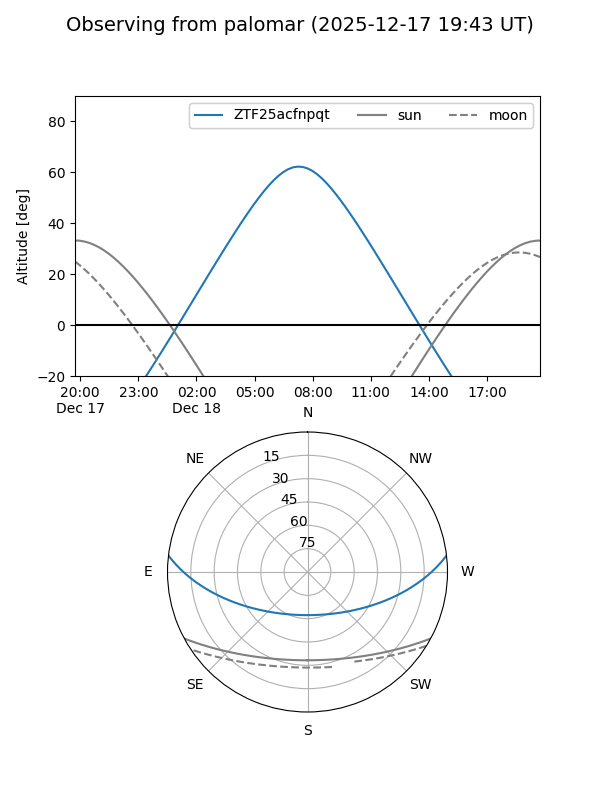

ZTF25acfnpqt
Target ZTF25acfnpqt at 2025-12-18 11:17
Aliases and brokers:
FINK: fink-portal.org/ZTF25acfnpqt
Lasair: lasair-ztf.lsst.ac.uk/objects/ZTF25acfnpqt
ALeRCE: alerce.online/object/ZTF25acfnpqt
alt names
ZTF25acfnpqt (ztf,fink_ztf)
Coordinates:
equatorial (ra, dec) = 79.1106,+5.59587
equatorial (HMS+DMS) = 05:16:26.54,+05:35:45.14
galactic (l, b) = (196.4488,-18.19501)
Photometry
last ztfg=19.96
1 ztfg detections
Lightcurve

Visibility


Additional plots